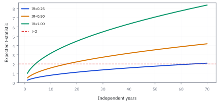

3.2 The Central Limit Theorem
ค่าเฉลี่ยของข้อมูลอิสระจำนวนมากมีรูปร่างเกือบเป็นระฆัง normal เสมอ ไม่ว่าข้อมูลรายตัวจะหน้าตาแบบไหน เราจึงแปลง SE เป็นโอกาสได้
ผู้จัดการกองทุนสมมติคนหนึ่งชนะดัชนีเฉลี่ยปีละ 3% ตลอดสี่ปี ส่วนต่างรายปีของเขากับดัชนีแกว่งด้วย SD 6% ถ้าความจริงเขาไม่มีฝีมือเลย คือส่วนต่างเฉลี่ยจริงเป็นศูนย์ ผลงานดีอย่างน้อยเท่านี้จะเกิดขึ้นบ่อยแค่ไหน
ลองตอบก่อนเปิดเฉลย
บ่อยกว่าที่คิดมาก ค่าเฉลี่ยสี่ปีมี SE $6\%/\sqrt4=3\%$ ผล 3% จึงห่างศูนย์เพียงหนึ่ง SE ถ้าค่าเฉลี่ยแจกแจง normal โอกาสได้ผลอย่างน้อยเท่านี้คือ $1-\Phi(1)\approx15.87\%$ ในผู้จัดการที่ไร้ฝีมือ 100 คน คาดว่าราว 16 คนจะมีประวัติสี่ปีที่ดูดีแบบนี้
ภาพรวมก่อนลงสูตร
กฎจำนวนมาก บอกว่าค่าเฉลี่ยวิ่งไปหาค่าจริง และบอกขนาดความคลาดว่าเป็น $\sigma/\sqrt n$ แต่ขนาดอย่างเดียวยังแปลงเป็นโอกาสไม่ได้ ถ้าจะตอบว่า “ผลแบบนี้หายากแค่ไหน” ต้องรู้รูปร่างของการแจกแจงของค่าเฉลี่ยด้วย
central limit theorem (CLT) ให้รูปร่างนั้น: เมื่อบวกชิ้นส่วนอิสระที่มี variance จำกัดเข้าด้วยกันมาก ๆ ผลรวมหรือค่าเฉลี่ยจะมีรูปร่างเข้าใกล้ normal ไม่ว่าแต่ละชิ้นจะแบน เบ้ หรือเป็นขั้นบันได เหตุผลคือค่ากลาง ๆ เกิดได้หลายทาง ส่วนค่าสุดขั้วต้องให้ทุกชิ้นสุดขั้วพร้อมกัน
หน้านี้จะนับลูกเต๋าให้เห็นระฆังเกิดขึ้นจริง อธิบายว่าทำไมต้องเป็น normal ใช้มันตอบคำถามกองทุน แปลงคุณภาพของผู้จัดการเป็นจำนวนปีที่ต้องรอ แล้วดูสองที่ที่ CLT อ่อนแรง คือหางของข้อมูลเบ้ และข้อมูลที่สัมพันธ์กันตามเวลา
รูป — ผลรวมลูกเต๋า 1, 2 และ 4 ลูก
ศัพท์ที่ใช้ในหน้านี้
- Sampling distribution
- การแจกแจงของตัวประมาณ เช่นค่าเฉลี่ย ถ้าเก็บข้อมูลชุดใหม่ซ้ำหลายครั้งจากกลไกเดิม ใช้แปลง “ค่าเฉลี่ยที่เห็น” เป็น “ผลแบบนี้หายากแค่ไหน”
- Standardize (z-score)
- ลบค่าเฉลี่ยแล้วหารด้วย SD ทำให้ตัวแปรมีค่าเฉลี่ยศูนย์และ SD หนึ่ง ใช้เทียบทุกปัญหากับ normal มาตรฐานตัวเดียว
- Continuity correction
- เลื่อนขอบครึ่งหน่วยเมื่อประมาณตัวแปรจำนวนเต็มด้วยโค้งต่อเนื่อง ใช้ให้แท่งของค่าที่ขอบถูกนับครบ
- MGF
- moment generating function $M_X(t)=\mathbb E[e^{tX}]$ แปลงผลรวมของตัวแปรอิสระเป็นผลคูณ ใช้พิสูจน์ CLT แบบสั้น
- Skewness
- ความเบ้ $\gamma=\mathbb E[(X-\mu)^3]/\sigma^3$ บอกว่าหางข้างไหนยาวกว่า ใช้ดูว่า normal จะประมาณหางผิดไปทางไหน
- Active return และ information ratio (IR)
- active return คือผลตอบแทนพอร์ตลบผลตอบแทนดัชนีอ้างอิง IR คือค่าเฉลี่ยของมันหารด้วย SD ของมัน ใช้วัดฝีมือต่อหน่วยความเสี่ยงที่เบี่ยงจากดัชนี
สัญลักษณ์และหน่วย
| สัญลักษณ์ | ความหมาย | หน่วย |
|---|---|---|
| $X_i$ | active return ปีที่ $i$ | ทศนิยมต่อปี (0.03 คือ 3%) |
| $\mu,\ \sigma$ | ค่าเฉลี่ยและ SD จริงของ $X_i$ | ต่อปี |
| $\bar X_n$ | ค่าเฉลี่ยของ $n$ ปี | ต่อปี |
| $Z_n$ | ค่าเฉลี่ยที่ standardize แล้ว | จำนวน SE |
| $\Phi(z)$ | CDF ของ normal มาตรฐาน: โอกาสที่ไม่เกิน $z$ | ไม่มีหน่วย |
| $\gamma,\ \rho$ | skewness และ correlation ระหว่างปีที่ติดกัน | ไม่มีหน่วย |
ขั้นที่ 1 — ค่าเฉลี่ยมีการแจกแจงของมันเอง
ประวัติสี่ปีที่เห็นเป็นเพียงหนึ่งชุดจากหลายชุดที่ “อาจเกิดขึ้นได้” ถ้าเล่นประวัติศาสตร์ซ้ำ ค่าเฉลี่ยจะออกมาไม่เท่าเดิม การแจกแจงของค่าเฉลี่ยข้ามการเล่นซ้ำเหล่านี้เรียกว่า sampling distribution สมมติว่า $X_i$ เป็น i.i.d. มีค่าเฉลี่ย $\mu$ และ variance $0\lt\sigma^2\lt\infty$ แล้ว standardize ค่าเฉลี่ย
บรรทัดที่สองจริงทุก $n$ อยู่แล้ว เพราะ $\bar X_n$ มีค่าเฉลี่ย $\mu$ และ SE $\sigma/\sqrt n$ ตามที่ กฎจำนวนมาก หาไว้ การลบ $\mu$ ย้ายจุดกลางมาศูนย์ การหารด้วย SE ทำให้ความกว้างเป็นหนึ่ง สิ่งใหม่ที่ CLT เพิ่มคือบรรทัดที่สาม: รูปร่างของ $Z_n$ เข้าใกล้ normal มาตรฐาน (normal distribution) เมื่อ $n$ โต บรรทัดสุดท้ายแปลงกลับเป็นภาษาค่าเฉลี่ย เครื่องหมาย ≈ สำคัญ มันเป็นการประมาณที่ดีขึ้นเมื่อ $n$ โต ไม่ใช่ความเท่ากันทุก $n$ ไม่มีเกณฑ์สากลว่า “30 ตัวพอเสมอ” ถ้า $X_i$ เป็น normal อยู่แล้ว ค่าเฉลี่ยเป็น normal พอดีทุก $n$ ถ้า $X_i$ เบ้หรือหางหนามาก 30 ตัวอาจยังประมาณหางได้แย่
ขั้นที่ 2 — นับลูกเต๋าให้เห็นระฆังเกิดขึ้นจริง
โจทย์ให้อะไรมาบ้าง: ลูกเต๋ายุติธรรมสี่ลูกโยนอิสระกัน ถามโอกาสที่ผลรวมแต้มได้อย่างน้อย 20 นับให้ตรงก่อน แล้วเทียบกับการประมาณด้วย normal
ลูกเดียวมีหกหน้าโอกาสเท่ากัน สองลูกมี 36 วิธี ผลรวม 2 ถึง 12 เกิดได้ 1, 2, 3, 4, 5, 6, 5, 4, 3, 2, 1 วิธี เพราะผลรวมตรงกลางประกอบได้หลายคู่ ส่วนผลรวม 2 ต้องได้ 1 ทั้งคู่เท่านั้น สี่ลูกมี $6^4=1{,}296$ วิธี ผลรวม 14 เกิดได้ 146 วิธี ผลรวม 4 และ 24 อย่างละวิธีเดียว ผลรวม 20, 21, 22, 23, 24 เกิดได้ 35, 20, 10, 4, 1 วิธี รวม 70 วิธี
คำตอบ: นับตรงได้ 5.401% normal ให้ 5.367% ต่างกันเพียง 0.034 จุดเปอร์เซ็นต์ ทั้งที่ข้อมูลรายตัวเป็นขั้นบันไดแบน ๆ และมีแค่สี่ตัว $\mathbb E[X^2]$ คือ $(1+4+9+16+25+36)/6=91/6$ ผลรวมสี่ลูกมี variance สี่เท่าของลูกเดียวเพราะอิสระกัน ขอบ 19.5 คือ continuity correction: ผลรวมเป็นจำนวนเต็ม แท่งของค่า 20 กินพื้นที่ตั้งแต่ 19.5 ถึง 20.5 ถ้าใช้ขอบ 20 จะตัดครึ่งแท่งนั้นทิ้งและได้เพียง 3.95%
ตรวจเองใน 10 วินาที: $(19.5-14)/3.416\approx1.61$ และ $1-\Phi(1.61)$ ราว 5.4% ตรงกับที่นับ
รูป — หางของผลรวมสี่ลูก: นับจริงกับพื้นที่ใต้ normal
ขั้นที่ 3 — ทำไมต้องเป็น normal: พจน์กำลังสองชนะทุกพจน์
ลูกเต๋าบอกว่าระฆังเกิดขึ้นจริง ขั้นนี้บอกว่าทำไม ให้ $Y_i=(X_i-\mu)/\sigma$ ซึ่งมีค่าเฉลี่ยศูนย์และ variance หนึ่ง แล้วใช้ MGF $M_Y(t)=\mathbb E[e^{tY}]$ ซึ่งเปลี่ยนผลรวมของตัวแปรอิสระเป็นผลคูณ บทพิสูจน์ย่อนี้สมมติเพิ่มว่า MGF มีค่าจำกัดใกล้ศูนย์
ใจความคือ หลัง standardize แล้ว ทุกการแจกแจงหน้าตาเหมือนกันถึงพจน์กำลังสอง และพจน์ที่สูงกว่าจางหายเร็วกว่า บรรทัดแรกคือการกระจาย $e^{sY}$ แบบ Taylor แล้วหาค่าเฉลี่ยทีละพจน์ พจน์อันดับหนึ่งหายเพราะ $\mathbb E[Y]=0$ พจน์อันดับสองเหลือ $s^2/2$ เพราะ $\mathbb E[Y^2]=1$ ส่วน $\cdots$ คือพจน์ตั้งแต่ $s^3$ ขึ้นไป บรรทัดที่สี่ใช้ความอิสระ: ค่าเฉลี่ยของผลคูณ $e^{tY_1/\sqrt n}\cdots e^{tY_n/\sqrt n}$ เท่ากับผลคูณของค่าเฉลี่ย จุดที่ต้องระวังคือพจน์อันดับสาม เช่น skewness มีขนาดราว $n^{-3/2}$ ต่อตัว คูณ $n$ ตัวแล้วเหลือ $n^{-1/2}$ ซึ่งหายไป ส่วนพจน์อันดับสองมีขนาด $1/n$ ต่อตัว คูณ $n$ ตัวแล้วเหลือค่าคงที่ ลิมิต $(1+a/n)^n\to e^a$ ให้ $e^{t^2/2}$ ซึ่งคือ MGF ของ normal มาตรฐาน ที่ $t=1$ และ $n=10$ นิพจน์ที่ตัดพจน์เศษได้ $(1+1/20)^{10}\approx1.6289$ เทียบ $e^{1/2}\approx1.6487$ ฉบับเต็มของ CLT ใช้ characteristic function แทน เพราะบางการแจกแจงมี variance จำกัดแต่ไม่มี MGF เช่น lognormal
ขั้นที่ 4 — กลับมาที่กองทุน: สี่ปีบอกอะไรได้จริง
โจทย์ให้อะไรมาบ้าง: สี่ปี ค่าเฉลี่ย active return $\bar X_4=0.03$ SD รายปี $\sigma=0.06$ ที่สมมติว่ารู้จากแหล่งอื่น และสมมติว่า active return รายปีเป็น normal อิสระกัน ถามว่าถ้าค่าเฉลี่ยจริงเป็นศูนย์ ผลอย่างน้อย 3% เกิดบ่อยแค่ไหน
คำตอบ: 15.87% ผลนี้ห่างศูนย์เพียงหนึ่ง SE ในผู้จัดการไร้ฝีมือ 100 คน คาดว่าราว 15.9 คนจะได้ผลระดับนี้หรือดีกว่า ตัวเลขนี้คือโอกาสของข้อมูลเมื่อสมมติว่าไร้ฝีมือ ไม่ใช่โอกาส 15.87% ที่ผู้จัดการไร้ฝีมือ ความต่างนี้จะกลับมาอีกครั้งใน การทดสอบสมมติฐาน ถ้า SD 6% ไม่ได้รู้จากที่อื่นแต่ประมาณจากสี่ปีเดียวกัน ต้องใช้ Student $t$ ที่ df เท่ากับ 3 ซึ่งให้ 19.55% แทน (confidence interval อธิบายว่าทำไม)
รูป — ค่าเฉลี่ยสี่ปีของผู้จัดการไร้ฝีมือ
ขั้นที่ 5 — แปลงคุณภาพเป็นจำนวนปีที่ต้องรอ
คำถามกลับด้านที่ทีมคัดเลือกกองทุนถามคือ ถ้าผู้จัดการมีฝีมือจริง ต้องดูกี่ปีจึงจะเห็น ฝีมือวัดด้วย information ratio $\mathrm{IR}=\mu/\sigma$ ของ active return ในหน่วยต่อปี ถ้าค่าเฉลี่ยจริงคือ $\mu$ สถิติ $z$ ที่ทดสอบค่าเฉลี่ยศูนย์จะมีค่าเฉลี่ยดังนี้
ฝีมือที่ดีขึ้นสองเท่าลดเวลารอลงสี่เท่า เพราะ $n$ ขึ้นกับกำลังสองของ IR ผู้จัดการที่ IR 0.5 ต่อปี (ถือว่าดีมาก) ต้องรอ 16 ปีให้สถิติเฉลี่ยถึง 2 ถ้า IR 0.25 ต้องรอ 64 ปี ถ้า IR 1 ใช้สี่ปี ที่ IR 0.5 สถิติเฉลี่ยคือ 1, 2, 3 และ 5 เมื่อมีข้อมูล 4, 16, 36 และ 100 ปี จุดที่ถูกมองข้ามคือ “สถิติเฉลี่ยถึง 2” ไม่ได้แปลว่าจะผ่านเกณฑ์ 2 แน่ ๆ $z$ ยังแกว่งรอบค่าเฉลี่ยด้วย SD หนึ่ง โอกาสผ่านจึงมีแค่ครึ่งเดียว การวางแผนให้ผ่านด้วยโอกาสสูงต้องใช้แนวคิด power ใน การทดสอบสมมติฐาน
รูป — คุณภาพของผู้จัดการกับระยะเวลาที่ต้องเก็บหลักฐาน

ขั้นที่ 6 — ความเบ้หดตาม √n แต่หางยังเพี้ยนได้
CLT ไม่ได้บอกว่า $n$ เท่าไรจึงพอ เครื่องมือหนึ่งที่วัดได้คือ skewness ให้ $Y_i$ อิสระ มีค่าเฉลี่ยศูนย์ variance หนึ่ง และ skewness $\gamma$ แล้วดูว่าความเบ้ของค่าเฉลี่ยหดเร็วแค่ไหน
เมื่อกระจายกำลังสามของผลรวม พจน์ไขว้แบบ $Y_i^2Y_j$ หรือ $Y_iY_jY_k$ ทุกพจน์มีตัวหนึ่งที่โดดเดี่ยว ซึ่งค่าเฉลี่ยเป็นศูนย์และอิสระจากตัวอื่น พจน์เหล่านั้นจึงหายหมด เหลือ $n$ พจน์ $\mathbb E[Y_i^3]=\gamma$ ตัวหารคือ SD ของผลรวมยกกำลังสาม $(\sqrt n)^3$ ความเบ้จึงหดช้าเพียง $1/\sqrt n$ ข้อมูลแบบ exponential มี $\gamma=2$ เฉลี่ย 30 ตัวยังเหลือความเบ้ $2/\sqrt{30}\approx0.365$ ผลที่ตามมาคือหางสองข้างผิดไม่เท่ากัน ค่าเฉลี่ยของ 30 ตัวมี SD $1/\sqrt{30}$ จุดตัด 1% ของ normal คือ $1\pm2.326/\sqrt{30}$ หรือ 1.4247 และ 0.5753 การแจกแจงจริงของค่าเฉลี่ยนี้ (gamma) ให้หางขวา 1.70% และหางซ้าย 0.34% แทนที่จะเป็น 1% ทั้งคู่ ทฤษฎีบท Berry–Esseen ยืนยันว่าความคลาดของ CDF ทั้งเส้นหดตาม $1/\sqrt n$ เช่นกัน แต่ความคลาด 0.7 จุดเปอร์เซ็นต์ที่หาง 1% คือความคลาดสัมพัทธ์ 70% การใช้ CLT รับรอง VaR ที่ 99.9% จึงต้องตรวจหางจริงเพิ่ม
รูป — ค่าเฉลี่ย 30 ตัวของข้อมูลเบ้ยังเบ้อยู่
ขั้นที่ 7 — ข้อมูลตามเวลา: ต้องนับคู่ที่สัมพันธ์กัน
ผลตอบแทนปีนี้กับปีหน้ามักไม่อิสระกันจริง โดยเฉพาะกองทุนที่ถือสินทรัพย์สภาพคล่องต่ำซึ่งราคาถูกทำให้เรียบ ถ้าอนุกรมมี variance รายปี $\sigma^2$ และ correlation ที่ระยะห่าง $k$ ปีเป็น $\rho_k$ ต้องนับ covariance ของทุกคู่เหมือนตารางคู่ในหน้า กฎจำนวนมาก
คู่ที่ห่างกัน $k$ ปีในข้อมูล $n$ ปีมี $n-k$ คู่ และนับสองครั้ง (ปีก่อนกับปีหลัง สลับกัน) จึงได้ตัวคูณ $2(n-k)/n=2(1-k/n)$ ถ้าอนุกรมเป็นแบบ AR(1) ที่ $\rho_k=\rho^k$ เมื่อ $n$ ใหญ่ ผลรวมเป็นอนุกรมเรขาคณิต $2\rho/(1-\rho)$ บวกหนึ่งได้ $(1+\rho)/(1-\rho)$ ที่ $\rho=0.5$ ตัวคูณระยะยาวคือ 3 ลองกับผู้จัดการ IR 0.5 ที่มีข้อมูล 16 ปี: ถ้าอิสระกัน SE คือ 1.5% และ $z=2$ ถ้าคิดตัวคูณระยะยาว SE เป็น $1.5\%\times\sqrt3\approx2.598\%$ และ $z\approx1.155$ ถ้าคิดผลรวมจริงที่ 16 ปี ตัวคูณคือ 2.750 SE 2.487% และ $z\approx1.206$ หลักฐานที่ดูเหมือนสอง SE เหลือราวหนึ่ง SE กว่า ๆ การมีสูตร variance ยังไม่พอรับประกัน CLT สำหรับข้อมูลสัมพันธ์กัน ต้องการให้ความสัมพันธ์จางลงเร็วพอตามระยะห่าง และในงานจริงมักใช้ long-run variance หรือ block bootstrap (Monte Carlo และ bootstrap) ซึ่งสุ่มข้อมูลเป็นช่วงต่อเนื่องเพื่อรักษาความสัมพันธ์
รูป — SE ของค่าเฉลี่ยเมื่อปีติดกันสัมพันธ์กันที่ 0.5
ความผิดที่ทำให้ตัวเลขดูน่าเชื่อแต่ผิด
คิดว่า CLT ทำให้ผลตอบแทนรายวันเป็น normal: CLT พูดถึงผลรวมหรือค่าเฉลี่ยของหลายชิ้น ผลตอบแทนรายวันของหุ้นยังหางหนาเหมือนเดิม การใช้ normal กับผลตอบแทนวันเดียวจะประเมินวันเลวร้ายต่ำไปมาก
ใช้กฎ “30 ตัวพอ” กับหาง: ค่าเฉลี่ย 30 ตัวของข้อมูลแบบ exponential มีหางขวา 1% ตามสูตร normal แต่ของจริงคือ 1.70% ถ้าใช้คำนวณเงินสำรองสำหรับเหตุการณ์หายาก จะสำรองน้อยเกินไป
ใช้ $z$ ทั้งที่ประมาณ SD จากข้อมูลน้อย: สี่ปีที่ประมาณ SD เองให้หาง 19.55% ภายใต้ Student $t_3$ ไม่ใช่ 15.87% ความต่างนี้มาจากความไม่แน่นอนของ SD เอง
นับหน้าต่างที่ซ้อนกันเป็นข้อมูลอิสระ: ผลตอบแทน 12 เดือนที่คำนวณทุกเดือนจากข้อมูล 10 ปีให้ 109 แถว แต่สองแถวติดกันใช้ 11 เดือนร่วมกัน ข้อมูลอิสระจริงมีราวสิบปี การหาร SD ด้วย $\sqrt{109}$ ทำให้ SE เล็กไปราว $\sqrt{109/10}\approx3.3$ เท่า
ใช้ทำอะไรบนโต๊ะจริง
เกือบทุกตัวเลข “บวกลบสอง SE” บนโต๊ะเทรดพิง CLT: ช่วงความคลาดของราคาจาก Monte Carlo การทดสอบว่ากลยุทธ์มีค่าเฉลี่ยไม่เป็นศูนย์ และ VaR ของพอร์ตที่มีตำแหน่งเล็ก ๆ อิสระกันจำนวนมาก ทุกครั้งที่ใช้ ให้ถามสามข้อ: ชิ้นส่วนอิสระพอไหม หางที่สนใจไกลแค่ไหน และข้อมูลมีกี่ชิ้นที่อิสระจริง
โจทย์ตรวจความเข้าใจ
1. ผู้จัดการ IR 0.25 ต่อปีต้องมีประวัติกี่ปีให้สถิติ $z$ เฉลี่ยถึง 2 และตอนนั้นโอกาสที่ $z$ จะเกิน 2 เป็นเท่าไร
เฉลย
$n=(2/0.25)^2=64$ ปี ตอนนั้น $z$ แจกแจงราว normal ค่าเฉลี่ย 2 SD หนึ่ง โอกาสเกิน 2 คือ $1-\Phi(0)=50\%$ เท่านั้น ประวัติ 64 ปีก็ยังเหมือนโยนเหรียญว่าจะผ่านเกณฑ์หรือไม่
2. โอกาสที่ผลรวมลูกเต๋าสี่ลูกได้อย่างน้อย 22 เป็นเท่าไร นับตรงและประมาณด้วย normal พร้อม continuity correction แล้วเทียบกับคำตอบที่ 20
เฉลย
ผลรวม 22, 23, 24 เกิดได้ 10, 4, 1 วิธี รวม 15 วิธี โอกาสจริง $15/1{,}296\approx1.157\%$ normal ให้ $1-\Phi((21.5-14)/3.416)=1-\Phi(2.196)\approx1.405\%$ สูงกว่าจริงราว 21% ที่ขอบ 20 สองค่าต่างกันไม่ถึง 1% ยิ่งไปไกลในหาง การประมาณยิ่งผิดสัมพัทธ์มากขึ้น (ที่นี่เกินจริง เพราะผลรวมสี่ลูกมีหางสั้นกว่า normal โดยไม่มีทางเกิน 24)
3. ข้อมูลรายปีมี correlation ระหว่างปีติดกัน $\rho=0.5$ แบบ AR(1) ถ้าอยากให้ SE ของค่าเฉลี่ยเท่ากับกรณีอิสระ 16 ปี ต้องใช้ราวกี่ปี (ใช้ตัวคูณระยะยาว)
เฉลย
กรณีอิสระ 16 ปีมี variance $\sigma^2/16$ กรณีสัมพันธ์กันมี variance ราว $3\sigma^2/n$ ตั้งให้เท่ากันได้ $n=48$ ปี ข้อมูลที่สัมพันธ์กันแบบนี้มีค่าแค่หนึ่งในสามของปีอิสระ
คำนวณซ้ำด้วย JavaScript
เปิดดูโค้ด
function Phi(x) {
const ax = Math.abs(x), d = Math.exp(-ax * ax / 2) / Math.sqrt(2 * Math.PI);
if (ax < 3) {
let term = ax, sum = ax;
for (let k = 1; term > 1e-17 * sum; k++) { term *= ax * ax / (2 * k + 1); sum += term; }
return x < 0 ? 0.5 - d * sum : 0.5 + d * sum;
}
let f = 0;
for (let k = 300; k >= 1; k--) f = k / (ax + f);
return x < 0 ? d / (ax + f) : 1 - d / (ax + f);
}
// Count every way four dice can land.
let counts = [1];
for (let die = 0; die < 4; die++) {
const next = Array(counts.length + 6).fill(0);
counts.forEach((c, total) => { for (let face = 1; face <= 6; face++) next[total + face] += c; });
counts = next;
}
const tail = from => counts.slice(from).reduce((a, b) => a + b, 0);
const sd4 = Math.sqrt(35 / 3);
// P(Gamma(n,1) > x) as a Poisson sum: the mean of n exponentials times n is Gamma(n,1).
function gammaUpper(n, x) {
let s = 0, t = Math.exp(-x);
for (let j = 0; j < n; j++) { s += t; t *= x / (j + 1); }
return s;
}
const n30 = 30, qU = 1 + 2.326348 / Math.sqrt(n30), qL = 1 - 2.326348 / Math.sqrt(n30);
// Finite-sample variance factor of an AR(1) mean.
const factor = (n, rho) => { let f = 1; for (let k = 1; k < n; k++) f += 2 * (1 - k / n) * rho ** k; return f; };
const t3Tail = t => 0.5 - (t / (Math.sqrt(3) * (1 + t * t / 3)) + Math.atan(t / Math.sqrt(3))) / Math.PI;
const result = {
waysTo14: counts[14], waysAtLeast20: tail(20), exact20: tail(20) / 1296,
normal20: 1 - Phi(5.5 / sd4), normal20NoCorrection: 1 - Phi(6 / sd4),
exact22: tail(22) / 1296, normal22: 1 - Phi(7.5 / sd4),
mgfCheck: [1.05 ** 10, Math.exp(0.5)],
fundP: 1 - Phi(0.03 / (0.06 / 2)), fundPt3: t3Tail(1),
yearsFor2: [0.25, 0.5, 1].map(ir => (2 / ir) ** 2),
skew30: 2 / Math.sqrt(n30),
gammaRight: gammaUpper(n30, qU * n30), gammaLeft: 1 - gammaUpper(n30, qL * n30),
ar16: factor(16, 0.5), se16: 0.06 / 4 * Math.sqrt(factor(16, 0.5)),
z16: 0.03 / (0.06 / 4 * Math.sqrt(factor(16, 0.5))), zLongRun: 2 / Math.sqrt(3)
};
console.log(JSON.stringify(result, null, 1));ควรได้ waysAtLeast20 70, exact20 0.05401, normal20 0.05367, gammaRight ราว 0.0170, gammaLeft ราว 0.0034 และ z16 ราว 1.206
สิ่งที่ควรตอบได้หลังอ่าน
- CLT ให้รูปร่างของค่าเฉลี่ยหลัง standardize ไม่ได้ทำให้ข้อมูลรายตัวเป็น normal
- นับผลรวมลูกเต๋าสี่ลูกได้ 70/1,296 = 5.401% และ normal พร้อม continuity correction ให้ 5.367%
- ผลงาน 3% จากสี่ปีที่ SD 6% ห่างศูนย์เพียงหนึ่ง SE ผู้จัดการไร้ฝีมือราว 16 ใน 100 คนทำได้
- เวลาที่ต้องรอคือ $(2/\mathrm{IR})^2$ ปี และสถิติที่เฉลี่ยถึงเกณฑ์ผ่านเกณฑ์ได้แค่ครึ่งเดียว
- ความเบ้หดตาม $1/\sqrt n$ หางจึงผิดได้มากแม้ตรงกลางดูดี และข้อมูลที่สัมพันธ์กันต้องขยาย SE ก่อนใช้ CLT
ทั้งสองหน้าที่ผ่านมาสมมติว่ารู้ $\sigma$ หรือรู้กลไกที่สร้างข้อมูล หน้าถัดไป estimator, bias และ standard error จะถามว่าตัวเลขที่เราคำนวณจากข้อมูลจริงดีแค่ไหน ทำไม sample variance ต้องหารด้วย $n-1$ และทำไม drift ประมาณยากกว่า volatility มาก